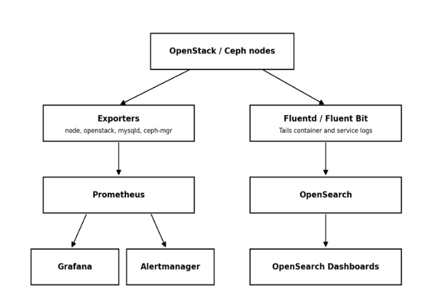

Monitoring
Overall monitoring stack and why metrics and logs are kept as separate pipelines:
Prometheus performs metrics collection and alerting rules; Grafana provides dashboards; Alertmanager handles notification routing.
An OpenSearch/Fluentd pipeline (Fluentd or Fluent Bit, OpenSearch, OpenSearch Dashboards) handles centralized logs.
Metrics and logs are two separate pipelines on purpose: metrics show that something is wrong and when; logs show why.
The same exporter-based pattern is reused across every OpenStack service, so operators only need to learn one model.

Core OpenStack API Services (Nova, Neutron, Keystone, Glance)
Nova, Neutron, Keystone, and Glance are monitored via openstack-exporter, which polls each API on an interval and converts the response into Prometheus metrics.
Nova: instance states, hypervisor stats, and resource usage, plus node_exporter for host-level CPU/RAM/disk on compute nodes.
Neutron: L3/DHCP/OVS agent up-down status and port/network counts, plus blackbox_exporter ICMP/TCP probes on floating IPs and VIPs to confirm real reachability.
Keystone: blackbox HTTP probes for API reachability and token issuance latency, since every other service depends on Keystone being up.
Glance: node_exporter tracks image-store disk usage (a full store blocks new builds) alongside openstack-exporter’s image list/status, correlated on one Grafana panel.
Nagios/Zabbix-style tools were skipped here because they need manual plugin scripts for OpenStack APIs; Ceilometer/Gnocchi was skipped as heavier and largely deprecated.
Component |
Primary Tool |
Key Signal |
|---|---|---|
Nova (Compute) |
openstack-exporter + node_exporter |
Instance/hypervisor state, host resources |
Neutron (Networking) |
openstack-exporter + blackbox_exporter |
Agent status, floating IP/VIP reachability |
Keystone (Identity) |
blackbox_exporter (HTTP probe) |
Endpoint availability, token latency |
Glance (Image) |
openstack-exporter + node_exporter |
Image status, store disk usage |
Storage Monitoring Ceph Backend
Storage monitoring is Ceph-first because the actual persistent data lives on Ceph, not on the Cinder API itself (see section 1.2).
ceph-mgr runs a Prometheus plugin exposing OSD up/down/in/out state, placement group (PG) status, pool capacity/usage, and cluster I/O throughput and latency.
This sits underneath the Cinder/Glance API checks: the API layer shows whether an operation succeeded; the Ceph layer shows why it might be slow or failing.
A degraded PG count or a downed OSD is exactly the kind of backend problem that causes slow or failed volume attach/detach without ever appearing as a Cinder-level error.
Monitoring only the Cinder API and skipping the Ceph layer is the single most common gap in OpenStack monitoring setups.
Layer |
Tool |
Key Signal |
|---|---|---|
Ceph cluster |
ceph-mgr Prometheus module |
OSD state, PG health, pool capacity |
Cinder API |
openstack-exporter |
Volume state counts (available/in-use/error) |
Glance API |
openstack-exporter |
Image status, backed by Ceph RBD pool |
Application & Orchestration Services (Horizon, Heat, Octavia, Zun)
Horizon: blackbox_exporter issues an HTTPS GET against the login page (status code, response time, cert expiry) since a process-level check can pass while the app itself is broken.
Heat: openstack-exporter reports stack counts by status (CREATE_COMPLETE, FAILED); Fluentd tails heat-engine logs to OpenSearch so OpenSearch Dashboards can surface the root cause.
Octavia: openstack-exporter polls loadbalancer/listener/pool/member status; blackbox_exporter probes the VIP:port directly, since amphora status alone can miss a misconfigured listener.
Zun: cAdvisor reads cgroups for true per-container CPU/memory/network, since the Zun API alone only shows reported state, not actual consumption.
Each of these services is watched on both a control-plane signal and a data-plane/user-facing signal, not just one.
Component |
Primary Tool |
Key Signal |
|---|---|---|
Horizon (Dashboard) |
blackbox_exporter (HTTP probe) |
Page load status, TLS cert expiry |
Heat (Orchestration) |
openstack-exporter + Fluentd logs |
Stack status, failure root cause |
Octavia (Load Balancer) |
openstack-exporter + blackbox_exporter |
Amphora state, VIP reachability |
Zun (Containers) |
cAdvisor + Prometheus |
Per-container CPU/memory/network |
Infrastructure Layer (Database, Messaging, Load Balancing)
MariaDB/Galera: mysqld_exporter runs as a monitoring user and reports wsrep_* variables — node state, replication lag, and cluster quorum.
Generic host monitoring alone will not show replication lag or split-brain risk, which is why a MySQL-aware exporter is required.
RabbitMQ: the Prometheus plugin exposes queue depth, message rates, and consumer counts, since queue backlog is the earliest sign of an overloaded service (e.g. Nova conductor falling behind).
HAProxy: haproxy_exporter reads the stats socket for backend up/down state and request metrics, combined with a blackbox_exporter probe directly on the VIP.
The HAProxy + VIP combination catches cases where HAProxy’s own view of a backend disagrees with reality due to a check misconfiguration.
Component |
Primary Tool |
Key Signal |
|---|---|---|
MariaDB / Galera |
mysqld_exporter + Grafana Galera dashboard |
Node state, replication lag, quorum |
RabbitMQ |
RabbitMQ Prometheus plugin |
Queue depth, unacked messages |
HAProxy + Keepalived (VIP) |
haproxy_exporter + blackbox_exporter |
Backend health, VIP failover |
Host & Container Layer
Every Kolla-Ansible service runs as a Docker container, so container restart counts and resource limits are a first-line signal across the deployment.
cAdvisor exposes per-container state and restart counts; Docker’s own HEALTHCHECK directive (built into Kolla images) flags unhealthy containers.
node_exporter runs on every node and exposes CPU, memory, disk I/O, filesystem, and network metrics in Prometheus format.
Alertmanager fires a notification whenever a defined threshold — e.g. disk usage above 85% — is crossed.
Vendor dashboards (iDRAC/iLO) or ad hoc ‘top’/’htop’ checks were not used as the primary signal since they give a snapshot, not historical trend data or automated alerts.
Layer |
Tool |
Key Signal |
|---|---|---|
Docker containers (Kolla runtime) |
cAdvisor + Docker healthchecks |
Restart counts, unhealthy containers |
Host / OS (all nodes) |
node_exporter + Alertmanager |
CPU, memory, disk, network thresholds |
Why This Combination Over a Single All-in-One Tool
Commercial all-in-one suites (Zabbix, SolarWinds, Datadog) can technically monitor everything, but need paid licensing at data-center scale.
Zabbix was evaluated directly for this deployment and would still need custom scripts to understand Nova, Neutron, and Ceph the way openstack-exporter and ceph-mgr already do natively.
Prometheus + Grafana + exporters is open source and container-native, fitting the Kolla/Docker model directly rather than fighting it.
A purpose-built openstack-exporter is maintained specifically for OpenStack API monitoring.
Alertmanager handles alert routing and deduplication without needing a separate paid alerting product.
The full comparison against every alternative considered, including newer 2026 tools, is presented in sections 13 and 14.